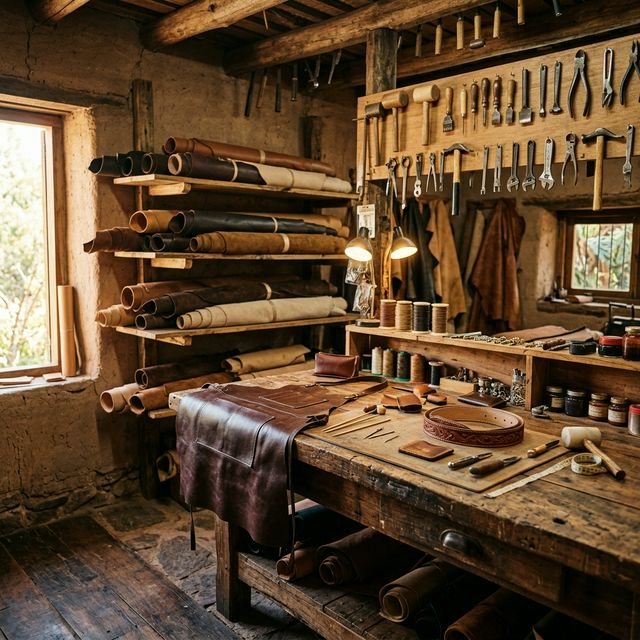

Nuestra historia
¿Quiénes somos?
CUERAR TUCUMÁN nació en San Miguel de Tucumán con una visión clara: llevar la mejor materia prima y los productos artesanales en cuero más finos a cada rincón del país.
Desde nuestros inicios, nos dedicamos a seleccionar cuidadosamente los cueros de mayor calidad, trabajando de la mano con los mejores curtidores y artesanos de la región. Cada pieza que sale de nuestro taller lleva consigo la tradición, el esfuerzo y la dedicación de un equipo apasionado.
Hoy somos referentes en Tucumán y en el noroeste argentino, abasteciendo tanto a particulares como a talleres y fábricas con materia prima de primera calidad y productos terminados de diseño exclusivo.

Lo que nos define
Seleccionamos cada cuero con rigurosidad para garantizar productos de excelencia que perduren en el tiempo.
Nos comprometemos con cada cliente, brindando asesoramiento personalizado y un servicio de primer nivel.
Trabajamos con proveedores que respetan procesos sustentables y prácticas responsables con el medio ambiente.
Combinamos técnicas artesanales tradicionales con diseños modernos para crear productos únicos y actuales.
Cómo trabajamos
Elegimos los mejores cueros de curtidurías nacionales, evaluando textura, grosor y resistencia.
Preparamos cada pieza con cortes precisos, acondicionamiento y tratamientos de calidad.
Nuestros artesanos trabajan a mano cada detalle con costura tradicional y terminaciones premium.
Empaquetamos con cuidado y enviamos a todo el país con seguimiento y garantía de calidad.